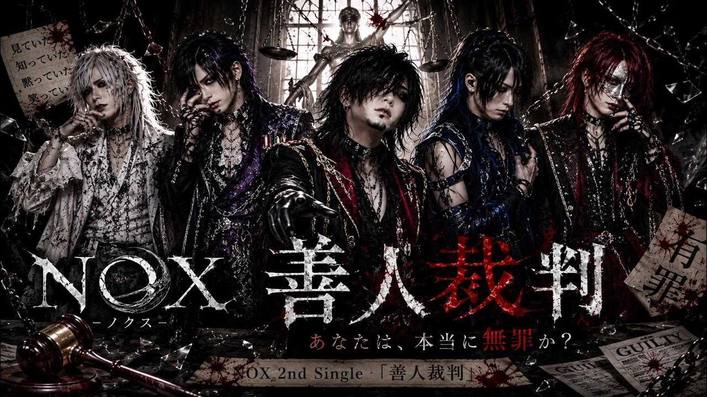
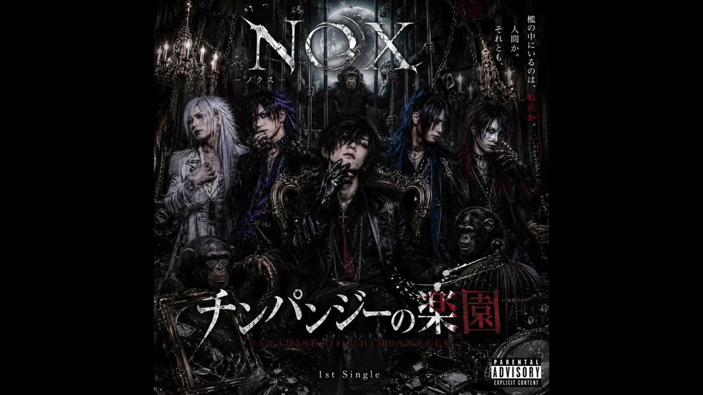

榎本魅愛「花言葉」公開
青い花と二人の時間に、終わらない愛の言葉を重ねる榎本魅愛の最新シングル。
記事を読む ↗OFFICIAL UPDATES
デビュー、リリース、アーティスト情報。
LATEST STORIES
青い花と二人の時間に、終わらない愛の言葉を重ねる榎本魅愛の最新シングル。
記事を読む ↗記憶が薄れても残り続ける夫婦愛を歌う、朝霧しのぶのセカンドシングル。
記事を読む ↗
遠回りや失敗も未来へつながると歌う、榎本魅愛の爽やかなJ-POP。
記事を読む ↗立ち上がれる日までそばにいるという思いを描くRE:VIVEの2nd Single。
記事を読む ↗
正義、偽善、無関心を問い、自分自身を裁く夜の法廷を描くNOXの2nd Single。
記事を読む ↗満たされない孤独と離れられない想いを、危うい口づけの物語として描く神代煌牙のダークなラブソング。
記事を読む ↗途切れた信号と失われない絆を、韓国語を中心としたダークK-POPサウンドで描くECLYPSEの3rd Single。
記事を読む ↗
笑顔の裏で涙を抱える人へ、焦らずそのままでいいと寄り添う榎本魅愛のバラード。
記事を読む ↗
人間の本能と社会への問いを、ダークなバンドサウンドと物語で描くNOXのデビュー作品。
記事を読む ↗
不安な夜を越え、明日への希望と無事を祈る榎本魅愛の楽曲。
記事を読む ↗傷ついた心に寄り添い、もう一度立ち上がる力を届けるRE:VIVEのデビュー作品。
記事を読む ↗幼い頃の約束と消えない面影をたどり、終わらない恋の残響を描く神代煌牙の物語作品。
記事を読む ↗インドの情熱と日本のメロディが響き合う、RANGILIの公式デビュー作品。
記事を読む ↗
認知症、家族、記憶、人生をテーマに、忘れても残る愛を歌う朝霧しのぶの演歌作品。
記事を読む ↗
好きだからこそ相手を手放し、最後は笑顔で別れたいと願う切ないバラード。
記事を読む ↗
RANGILIと朝霧しのぶの正式公開、神代煌牙とRE:VIVEの公開予定をお知らせします。
記事を読む ↗
夕暮れの海を舞台に、大切な人を守り抜く覚悟と永遠の誓いを描いた公式MVを紹介します。
記事を読む ↗
壊れたコードの先で赤い月が昇る。ECLYPSEの2nd Single、その世界観と公式MVを紹介します。
記事を読む ↗
「好き」は一回では足りない。榎本魅愛のデビュー曲「百万告」が描く、何度でも想いを届ける恋心と公式MV・Shortsの見どころを紹介します。
記事を読む ↗
可愛さと危険さが同居する榎本魅愛「取り扱いチュー💋い」。警報や安全装置を恋に置き換えた世界観と、公式MV・Shortsの楽しみ方を紹介します。
記事を読む ↗
記憶を失っても、また同じ人を好きになれるのか。榎本魅愛「もしも明日、はじめましてになっても」の物語、公式Lyric VideoとShortsを紹介します。
記事を読む ↗
5人組男性K-POPグループECLYPSEが、SUZUKA所属アーティストとして始動しました。
記事を読む ↗ECLYPSEのデビューシングル「SHADOW//CODE」を発表しました。公式MVとアーティスト情報を紹介します。
記事を読む ↗